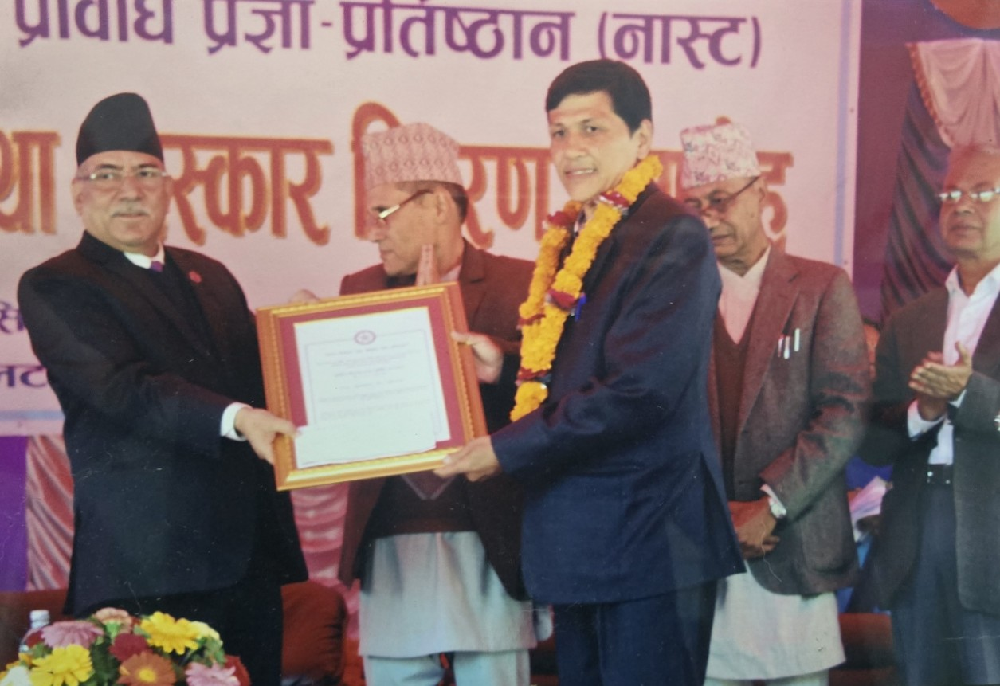
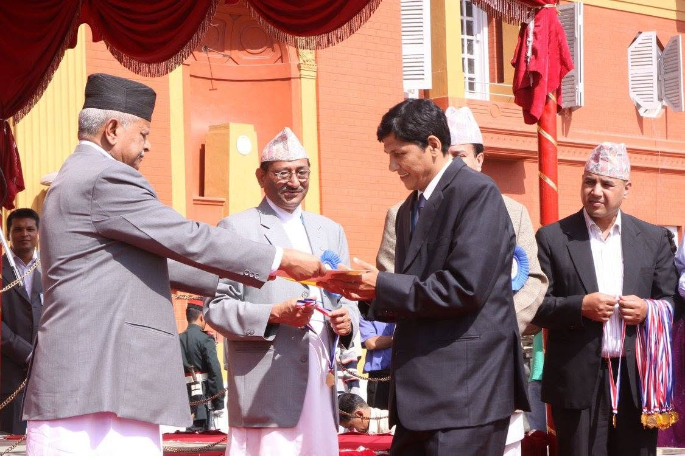
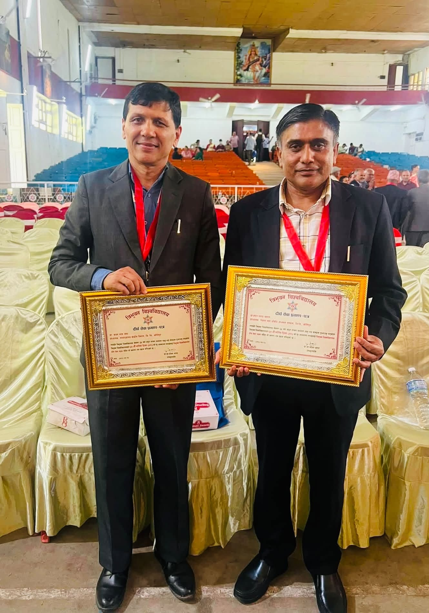
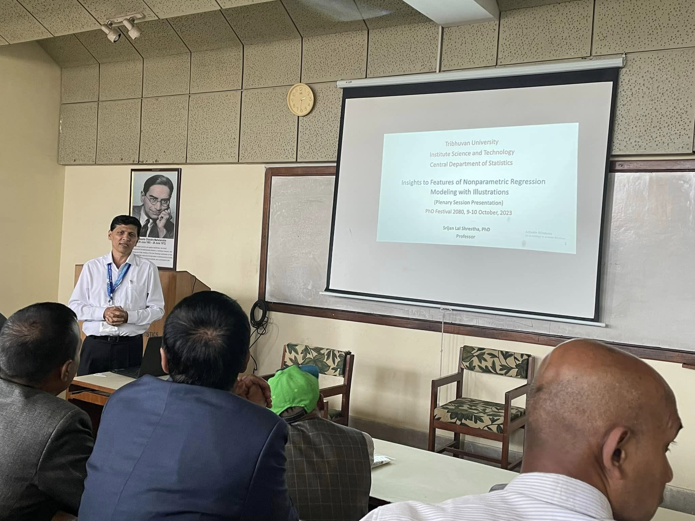
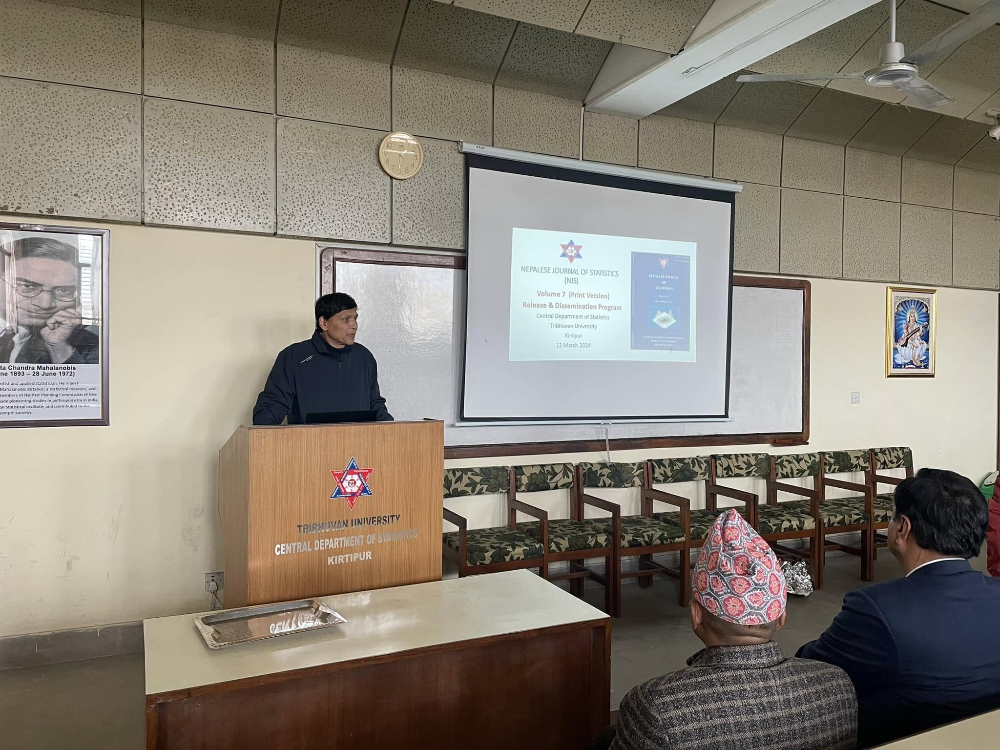
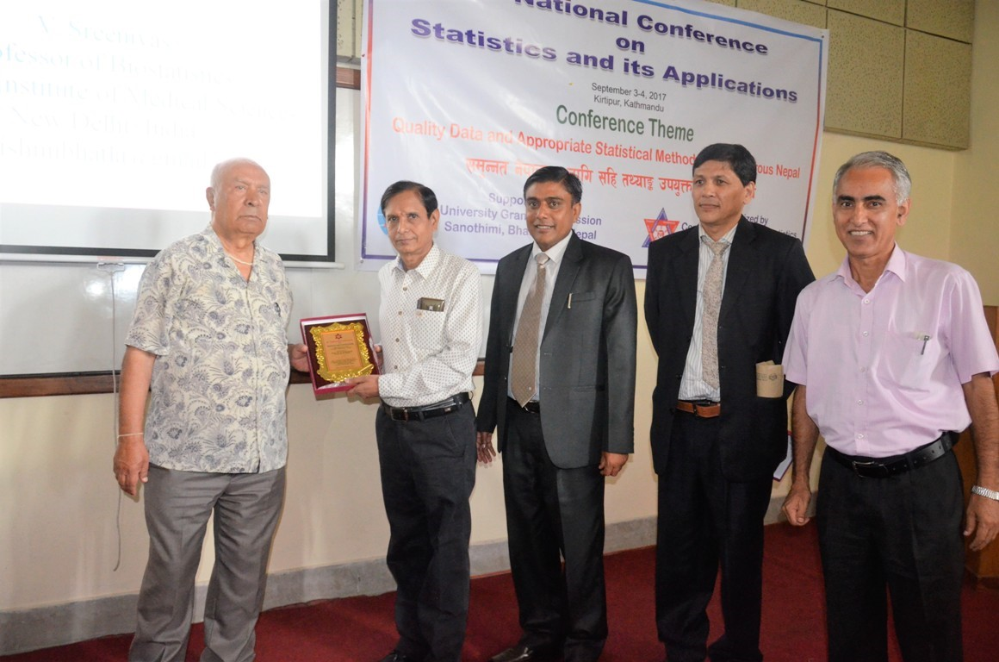

2013 –
Professor of Statistics
Central Department of Statistics, IoST, Tribhuvan University
Professor of Statistics and former Head of the Central Department of Statistics (CDS), Institute of Science and Technology, Tribhuvan University, where he has taught since 1992 and has been Professor since 2013. His research applies environmetrics, generalized linear models, time series and distributed lag methods to air pollution, climate-sensitive disease, drought and rainfall risk, population and human development in Nepal, with the WHO Urban Health Initiative, the Nepal Health Research Council and the Nepal Academy of Science and Technology.
He is Editor-in-Chief of the Nepalese Journal of Statistics, an Academic Editor of PLOS ONE and Adjunct Faculty at Chandigarh University, India. He received the NABIL Science and Technology Award (2016) and the Nepal Bidhya Bhushan “KA” (2009), and is ranked 10th in Nepal in Mathematical Sciences by the AD Scientific Index 2026.



PM2.5 and PM10 ambient and indoor air pollution modelling in Kathmandu Valley and rural Nepal, using curvilinear and gamma GLMs.
Distributed lag models for respiratory hospital admissions, mortality, childhood diarrhoeal disease and COVID-19 trends, with the WHO Urban Health Initiative and NHRC.
Logistic downscaling, seasonally separated rainfall models and probabilistic drought assessment over the Bagmati River Basin; climate-sensitive disease models.
Five-dimensional unequally weighted mapping and cluster analysis for subnational HDI assessment in Nepal, plus ecological footprint modelling.
Population ageing, fertility (Poisson models of children ever born), maternal mortality and age at first marriage in Nepal.
Censored negative exponential mixed distributions, nonparametric smoothers, exponential smoothing and categorical regression with optimal scaling.
Master’s and PhD courses at the Central Department of Statistics, Tribhuvan University.
| Environmetrics | MScPhD |
| Nonparametric Modelling | MScPhD |
| Multivariate Analysis | MScPhD |
| Sampling Theory & Design | MScPhD |
| Generalized Linear Models | MScPhD |
| Time Series Analysis | MScPhD |
| Design of Experiments | MSc |
| Probability | MSc |
| Econometrics | MSc |
Also visiting faculty for Biostatistics and Business Statistics at colleges and central departments, at undergraduate and graduate levels.
Journal articles and research papers, most recent first. S.L. Shrestha is underlined; DOIs link to the published version.
| AD Scientific Index 2026 | Tribhuvan Univ. | Nepal | Asia | World |
|---|---|---|---|---|
| Mathematical Sciences | #5 of 28 | #10 of 50 | #7,042 of 23,242 | #30,140 of 73,558 |
| Natural Sciences | #65 of 188 | #114 of 323 | #61,187 of 133,220 | #263,727 of 474,358 |
| All fields, by total h-index | #188 of 635 | #492 of 1,837 | #276,181 of 824,262 | #1,158,016 of 2,632,883 |
“Recent” covers the last six years. ScholarGPS classifies his work under Statistics (Physical Sciences), with top specialties Pollution, Air Pollution and Statistical Model.


